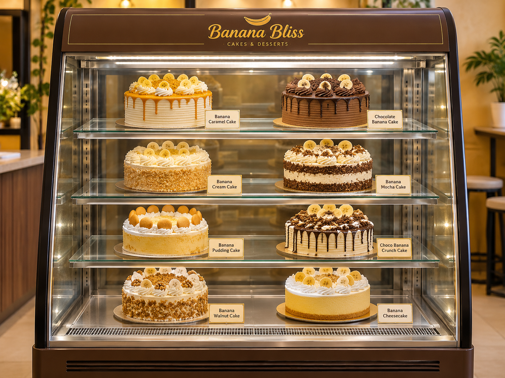
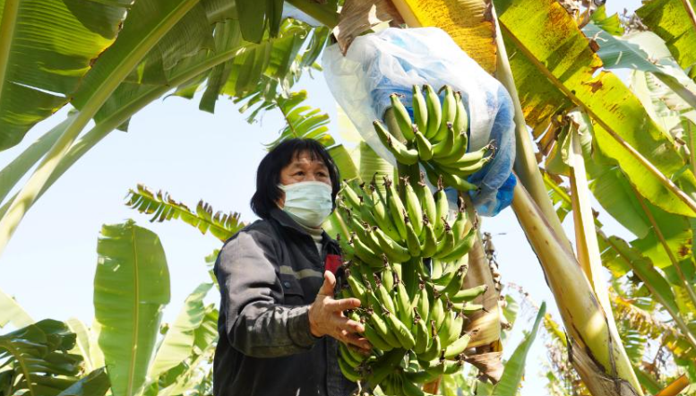

About Banana Bliss
Made with Love, Inspired by Bananas.
Our Story
Welcome to Banana Bliss, a dessert café created for people who love desserts but prefer something that is not overly sweet.
We started Banana Bliss with a simple idea: to turn the natural sweetness of ripe bananas into delicious and creative desserts.
Instead of depending on large amounts of added sugar, we focus on bringing out the natural flavour of bananas. From soft banana cakes to creamy puddings and refreshing drinks, every dessert is prepared with care and love.
We believe that a delicious dessert does not need to be extremely sweet. Our goal is to make every bite enjoyable and satisfying.

Where Our Bananas Come From

From Guangdong, China 🍌
At Banana Bliss, we carefully select our bananas from Guangdong, China. We choose these bananas because of their soft texture, smooth consistency, and naturally sweet flavour when fully ripe.
Their soft texture makes them suitable for creating creamy banana pudding, fluffy banana cakes, refreshing banana drinks, and other delicious desserts.
We believe that choosing quality ingredients is an important part of preparing delicious desserts. By using ripe bananas, we can bring out their natural sweetness and reduce the need for added sugar.
Our Sweetness Philosophy
Naturally sweet bananas are the heart of every Banana Bliss dessert.
Natural Banana Sweetness
We use ripe bananas as the main source of sweetness in our desserts. Their natural flavour helps us create delicious treats without relying on too much added sugar.
Zero-Calorie Sweetener
When extra sweetness is needed, we use zero-calorie sweetener instead of regular added sugar. This helps us maintain a balanced level of sweetness.
Less-Sweet Desserts
Our desserts are created for customers who prefer a lighter sweetness while still enjoying the delicious flavour of bananas.
Our Mission & Vision
Our Mission
To provide fresh, delicious, and less-sweet banana desserts by using quality ingredients, natural banana sweetness, and carefully selected sweeteners.
Our Vision
To become a favourite banana dessert café where customers can enjoy creative desserts and share sweet moments with their family and friends.
Why Choose Banana Bliss?
Quality Bananas🍌
We select ripe bananas from Guangdong, China, for their naturally sweet flavour and soft texture.
Creative Desserts🍰
We offer a variety of banana-inspired cakes, puddings, ice creams, yogurt, and refreshing drinks.
Made with Love💛
Every dessert is carefully prepared to provide a delicious and enjoyable experience for our customers.
Ready for Something Sweet?
Discover our delicious banana desserts and find your favourite treat today!
Explore Our Menu